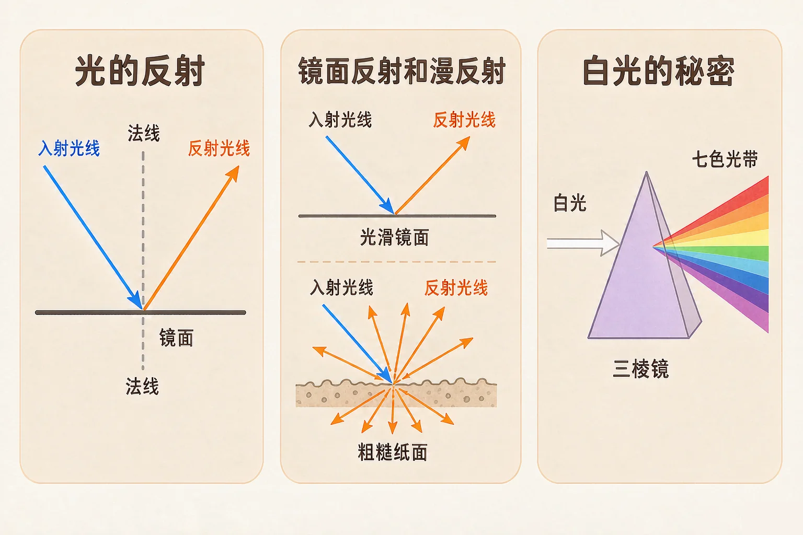
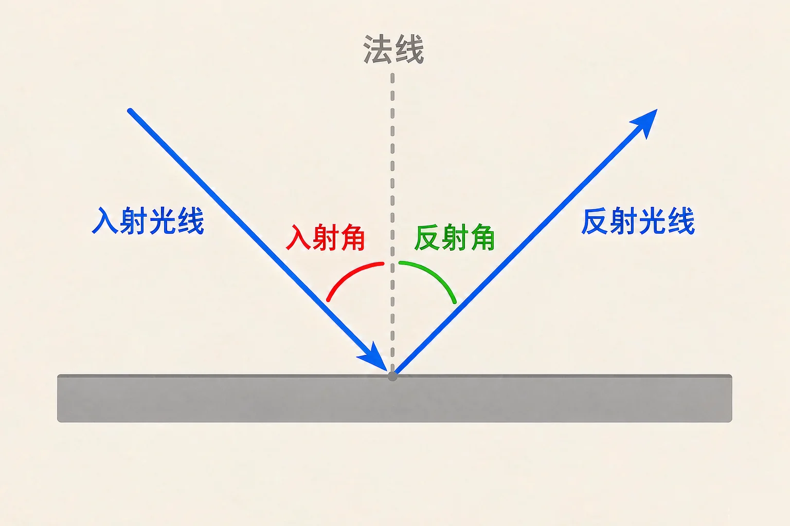
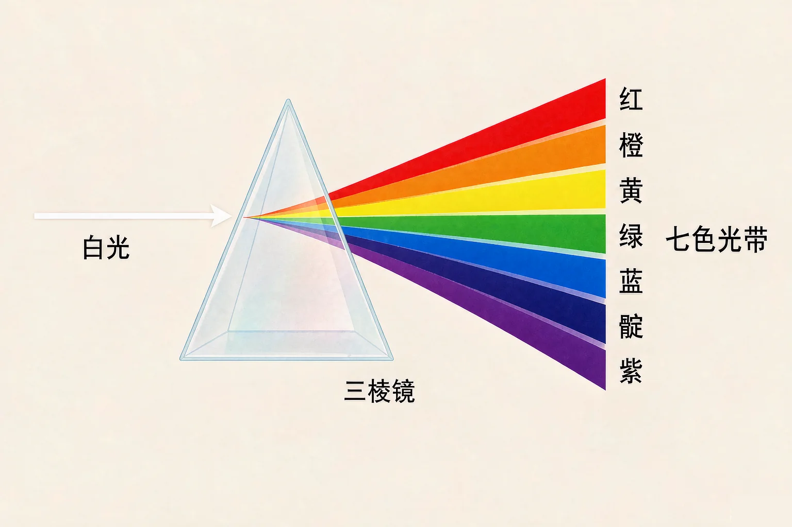

小学五年级 · 物质科学 · 声音与光
光本来是直着走的，为什么照到镜子上会拐弯，穿过三棱镜又会分身？

选一个你真正好奇的问题，后面的实验都会围着它转。
选择或输入后，这节课会围绕你的问题展开。
先凭直觉选一个，选完立刻看到解释——错了也没关系，正好知道要重点听哪里。
1. 用手电筒斜着照一面镜子，天花板上出现了光斑。这个光斑是怎么来的？
光遇到镜面会被反射，方向改变后射到天花板上，就形成了光斑。错因提醒：常见错误是误认为光会自己拐弯。光在同一物质中总是沿直线传播的，是镜面让它的方向变了。
2. 一束白光穿过三棱镜以后，在墙上出现了一条彩色光带。这说明：
白光里本来就藏着多种色光，三棱镜把它们分开排好队。错因提醒：不要误认为三棱镜给光染了色。三棱镜是无色透明的，它只是分光，不产生颜色。
3. 你做实验时用手电筒照到了同桌的眼睛，应该怎么做？
强光直射眼睛会让人很不舒服，甚至受伤。错因提醒：很多同学觉得实验中的光不亮、无所谓，这是很危险的搞混——玩激光笔、直视太阳或强光源，都可能伤害眼睛。做光的实验时，光只照物体，不照人眼。
光照到镜子上，会被弹回来，这就是光的反射。要看懂反射，先认识三个名字：入射光线、反射光线、还有那条垂直于镜面的虚线——法线。
谁在法线两侧
入射光线在左边，反射光线就在右边，两者分居法线两侧。
两个角谁大
反射角 永远等于 入射角。角都是跟法线比的，不是跟镜面比。

🔍 深层理解 换个角度再看一遍这件事，看看能不能说出背后的原理。
看见它：白天你能看见课桌、看见同学，是因为太阳光照到他们身上又被反射进你的眼睛。不发光的物体能被看见，全靠反射。
解释它：为什么镜子里的字是反的？因为镜子把光左右颠倒地反射回来，你看到的其实是文字的镜像，所以左右正好对调。
迁移它：自行车尾灯、路口的反光标志，里面都装着小棱镜或反光膜，把汽车的光原路反射回去，让司机远远就能看见。
拖动下面的滑块改变入射角，光路图和两个读数会立刻更新。先调到 30°，再调到 60°，对比一下。
看起来没有颜色的白光，其实是个颜色大集合。让白光穿过三棱镜，它就会按红、橙、黄、绿、蓝、靛、紫的顺序散开——这叫光的色散。

先点按钮让白光穿过三棱镜，看清楚七种颜色是怎么排队的；再切换到雨后情境，想一想天空里是什么在替我们分光。
题目：一束光斜射到平面镜上，入射光线与镜面的夹角是 60°。请算出反射角，并说明理由。
直接写 60° 是最常见的错误，原因是把光线和镜面的夹角当成了入射角。请记住：入射角、反射角都是跟法线比的。以后再遇到这种题，第一步永远是先画法线。
先凭直觉选一个，选完立刻看到解释——错了也没关系，正好知道要重点听哪里。
1. 下面哪句话是正确的？
反射角始终等于入射角，而且两个角都从法线量起。错因提醒：把光线与镜面的夹角当成入射角，是这一课最高频的常见错误——两者相加才是 90°。
2. 教室里各个位置的同学都能看见黑板上的字，这是因为：
黑板表面比较粗糙，光被弹向四面八方，所以每个位置都能看到。错因提醒：有同学误认为漫反射不遵守反射规律，其实每一小块都严格遵守，只是方向各不相同。
3. 关于彩虹，下面说法正确的是：
小水滴相当于无数个小三棱镜，把阳光分解成七色光。错因提醒：很多同学把方向搞混了——看彩虹要背对太阳，因为光是从你身后射进水滴再反射回你眼里的。
教室墙上有一小块地方照不到太阳，请你用一面小镜子，把阳光引到那块地方去。先想清楚再动手。
第一步：先预测
把镜子放在窗台上，光斑会落在墙上高一点的地方，还是低一点的地方？先写下你的猜测，再去试。
第二步：动手调，记录变化
慢慢转动镜子，光斑会往哪边跑？把三次不同的角度和光斑位置记在下面的表格里。
第三步：说清道理
用「入射光线、法线、反射光线、反射角等于入射角」这几个词，把光走的路讲给同桌听。
先凭直觉选一个，选完立刻看到解释——错了也没关系，正好知道要重点听哪里。
1. 汽车的两侧后视镜能把车后的情况反射给司机。司机从后视镜里看到的景物：
后视镜不能自己发光，它只是把景物射来的光反射进司机眼里。错因提醒：常见错误是误认为镜子里有个小世界。其实镜中的像就是光被你看见的结果。
2. 平静的水面能像镜子一样映出岸边的树，这是因为：
水面平静时光滑，能像镜子一样反射。错因提醒：一旦有风把水面吹皱，反射就变成漫反射，树影也就看不清楚了——这一点常常被忽略。
3. 一束紫光和一束红光一起斜射进三棱镜，出来以后：
不同色光偏折程度不同，紫光偏得最多，红光偏得最少，这正是色散能发生的原因。错因提醒：容易搞混的是谁偏得多——记住口诀「紫偏多、红偏少」，白光才会被拆开。
回到开头那两个问题：天花板上的光斑，是手电筒的光被镜面反射后改变了方向；白墙上的彩带，是白光被三棱镜分解成了七色光。一个讲的是光往哪走，一个讲的是光有哪些颜色。
给别人讲一遍：请用「反射、法线、入射角、色散」这四个词，说清楚为什么镜子里的字是左右反的。
三层练习，做完第一、二层就算通关；第三层留给愿意继续探索的同学。
⭐ 基础巩固（必做）
⭐⭐ 能力应用（必做）
⭐⭐⭐ 迁移挑战（选做）
左边是学它之前要先会的，右边是学会之后可以继续探索的，下面是同一领域的伙伴知识。